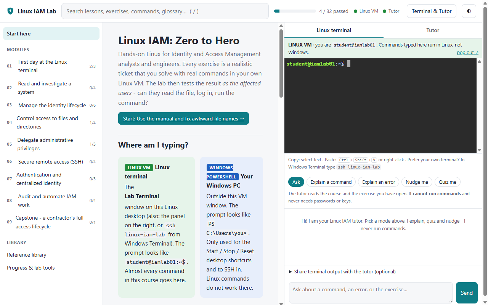
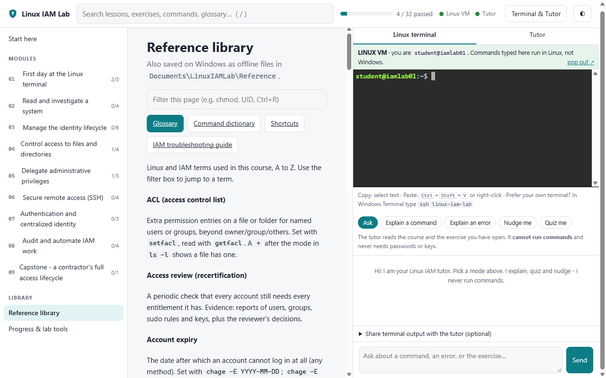
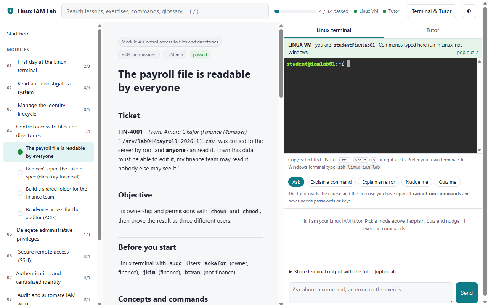
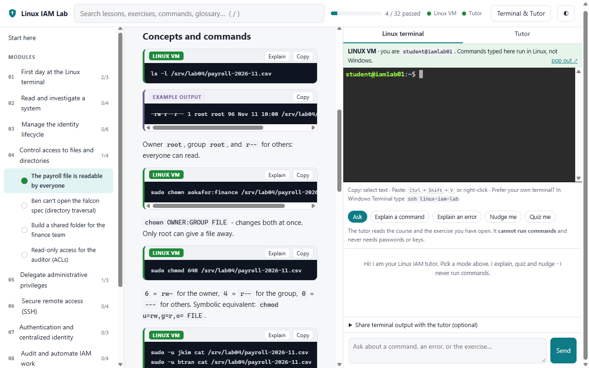
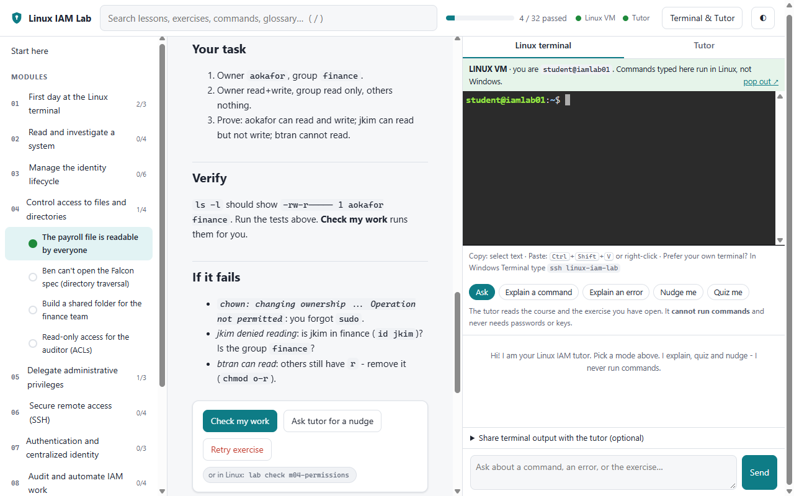
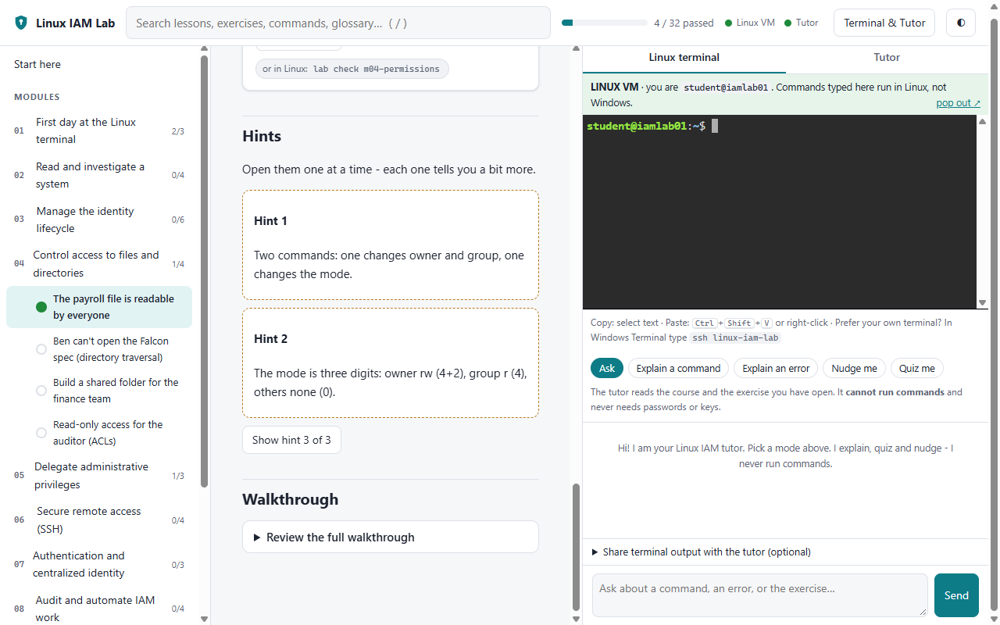
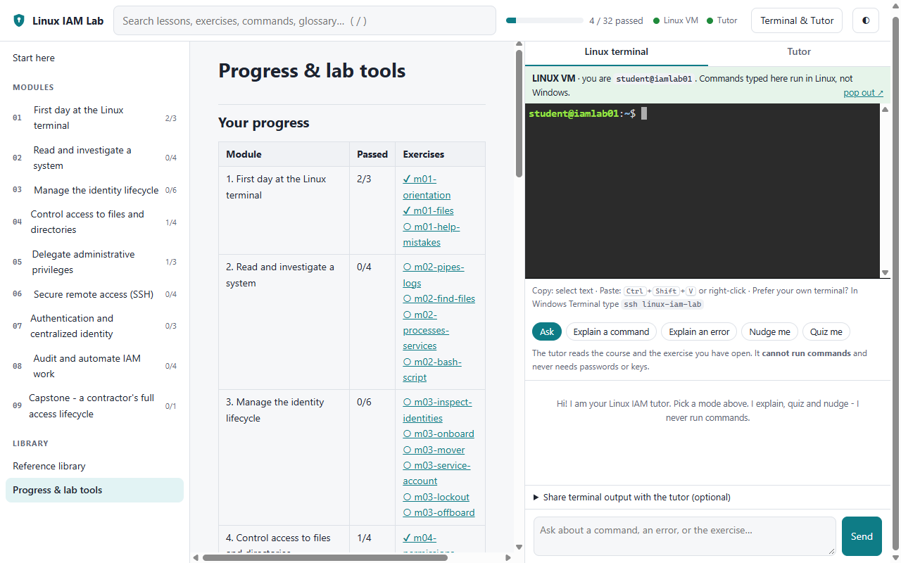
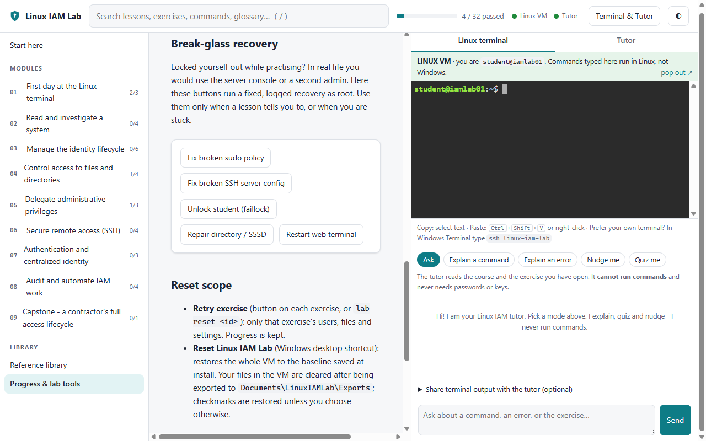

From an empty Windows PC to a working Linux Identity & Access Management lab: your own Ubuntu Server 24.04 LTS virtual machine in VirtualBox, a fictional company with real Linux accounts, groups, files, sudo rules, SSH keys and a small LDAP directory, 32 checked tickets, a 4-stage capstone, and a local AI tutor.
What you are building
Your PC (Windows 10/11)
├── Desktop icons: "Start / Stop / Reset Linux IAM Lab"
└── VirtualBox VM: LinuxIAM-Lab01 (Ubuntu Server 24.04 LTS, private NAT)
├── XFCE desktop, signed in as student@iamlab01
├── Lab Terminal: where you type the exercise commands
├── Course portal: lessons, tickets, Check my work, hints, reference
├── Fictional company "Northwind Labs": people, groups, /srv shares
├── OpenLDAP + SSSD: the lab's own directory, inside the VM
├── auditd, sshd, sudo, PAM: the real things, not simulations
└── Ollama + qwen2.5:1.5b: the AI tutor (local, no GPU needed)Nothing in this lab is simulated: every exercise is checked by testing access as the affected users. Can they read the file? Log in with the key? Run the delegated command? And are they denied everything else?

Part A — Install the lab (once)
A1. Check your PC
| Need | Minimum |
|---|---|
| Windows | Windows 10 (1809 or newer) or Windows 11, 64-bit. Home is fine. |
| Hypervisor | Oracle VirtualBox 7.x |
| Rights | A standard user. No administrator rights needed. |
| Memory | 5 GB free while installing and running (the VM uses 4 GB; -MemoryMB 3072 lowers it) |
| Disk | 25 GB free (about 9 GB is used after the install) |
| Internet | First install only, about 3.5 GB of downloads |
A2. Install VirtualBox
- Download VirtualBox 7 for Windows hosts from virtualbox.org.
- Run the installer with the default options.
A3. Get the project
Copy the project folder to your PC, for example Documents\Linux_IAM_Lab. The code is private for now: email the author to ask for access.
A4. Run the installer (one command)
Open Windows PowerShell (not as administrator), go to the project folder and run:
powershell -NoProfile -ExecutionPolicy Bypass -File .\Install-LinuxIAMLab.ps1What happens, step by step (all of it is logged to %LOCALAPPDATA%\LinuxIAMLab\logs, without passwords or keys):
- Preflight: checks Windows, VirtualBox, OpenSSH, memory, disk and free ports. Changes nothing.
- Keys: creates your learner SSH key and pins the VM's host key.
- Image: downloads the Ubuntu 24.04 cloud image and verifies Ubuntu's signature and checksum.
- VM: creates
LinuxIAM-Lab01with its own disk and private NAT. Ports listen on127.0.0.1only. - Provisioning: installs the desktop, the fictional company, the directory, the portal, every exercise and the tutor.
- Your Linux password: you choose the password for the Linux account
student(you type it forsudo). It is set inside the VM only. - Self-test, then a baseline snapshot that Reset uses later.
- Shortcuts on your desktop.
A fresh install takes about 45–60 minutes. It can be re-run safely: if your internet drops or the PC sleeps, run the same command again and finished steps are skipped.
Part B — Daily use: Start, Stop, Reset
| Desktop icon | What it does |
|---|---|
| Start Linux IAM Lab | Checks the VM really is this lab's VM, then opens it in a VirtualBox window. Linux signs in as student and opens the Lab Terminal and the course portal. |
| Stop Linux IAM Lab | Shuts down the lab VM cleanly. Only the lab VM. |
| Reset Linux IAM Lab | Exports your work, asks you to type RESET, restores the clean baseline, then restores your checkmarks. |
Start
Double-click Start Linux IAM Lab. The start log looks like this (real output, trimmed):
[OK] Target verified: LinuxIAM-Lab01 {078bd032-...}
[STEP] Starting the lab VM (state was 'poweroff')
[OK] The Linux IAM Lab window is opening: it logs in as student and opens
the course portal and a Linux terminal inside Linux
[STEP] Waiting for Linux and the lab services
[OK] Linux is up (SSH host key matches the pinned key)
[INFO] All lab services active.
[OK] Course portal is readyFrom power-off this takes about 2–3 minutes. Clicking it while the lab is running is safe: it only checks.
Stop
Double-click Stop Linux IAM Lab when you are done. It asks Linux to shut down properly (about 30 seconds).
Part C — Find your way around
Where am I typing?
The single most common beginner mistake is typing a Linux command into Windows. The lab makes the difference impossible to miss:
| Window | Prompt | Use it for |
|---|---|---|
| Lab Terminal (inside the Linux VM) | student@iamlab01:~$ in green | Almost every command in this course |
| Windows PowerShell (your PC) | PS C:\Users\you> | Only the Start / Stop / Reset scripts, and ssh linux-iam-lab |

The portal
- Left: Start here, the nine modules with your score for each, the Reference library and Progress & lab tools.
- Top: search (press /), your overall progress, and green lights for the Linux VM and the tutor.
- Right: Terminal & Tutor — a second Linux terminal and the AI tutor, side by side with the lesson.

The lab command
Everything in the portal is also available in the Lab Terminal (real output):
student@iamlab01:~$ lab help
lab list modules and exercises with your progress
lab show <exercise> the ticket and objective of an exercise
lab hint <exercise> [1|2|3] progressively stronger hints
lab check <exercise> run the automated check
lab reset <exercise> put ONE exercise back to its starting state (retry)
lab rescue <what> break-glass recovery: sudoers | sshd | faillock | sssd | terminal
lab where am I on Windows or Linux?
lab portal open the course portal in the Linux browserThe reference library
A glossary (A to Z), a command dictionary, shortcuts and an IAM troubleshooting guide. A copy is also saved on Windows in Documents\LinuxIAMLab\Reference, so you can read it with the VM off.

Part D — Work a ticket, start to finish
Every exercise follows the same loop: ticket → concepts and commands → your task → Check my work → hints if stuck → walkthrough. Here is one real ticket, “The payroll file is readable by everyone” (Module 4).
1. Read the ticket
The ticket says who is asking, what is wrong and what “done” means, in the words a real requester would use.

2. Learn the commands
Each command block shows the flags explained and example output. Explain sends that command to the tutor; Copy copies it for the terminal.

3. Do the task, then Check my work
Type the commands in the Lab Terminal. When you think you are done, click Check my work (or type lab check m04-permissions).

The check logs in as each affected person and tries the access for real (real output):
student@iamlab01:~$ lab check m04-permissions
Checking m04-permissions (the lab tests real access as the affected users)...
PASS: owner aokafor, group finance
PASS: mode 640 (rw-r-----)
PASS: ALLOWED as aokafor: read
PASS: ALLOWED as aokafor: write
PASS: ALLOWED as jkim (finance): read
PASS: DENIED as jkim: write
PASS: DENIED as btran (not finance): read
RESULT: all checks passed
4. Stuck? Hints, then the walkthrough
Three hints, each telling you a little more. The full walkthrough is always there to review after you pass, or when you really need it.

Part E — The course, Module 1 to 9
| Module | Tickets | You keep |
|---|---|---|
| 1 First day at the Linux terminal | orientation, files, help & awkward file names | Confidence at the prompt |
| 2 Read and investigate a system | pipes & logs, find, processes & services, a Bash script | A script that lists accounts that can log in |
| 3 Manage the identity lifecycle | inspect identities, onboard, mover, service account, lockout, offboard | Joiner, mover and leaver done properly |
| 4 Control access to files and directories | permissions, directory traversal, shared folder (setgid), ACLs | Access tested as two users, one allowed, one denied |
| 5 Delegate administrative privileges | sudo review, command delegation, lockout recovery | One command delegated, nothing more |
| 6 Secure remote access (SSH) | key login, broken SSH, sshd hardening, key revocation | A hardened sshd and a revoked key that stays revoked |
| 7 Authentication and centralized identity | authN vs authZ (PAM/NSS), directory lookup, directory-based access | LDAP users signing in through SSSD |
| 8 Audit and automate IAM work | failed logins, auditd, access-report script, evidence package | An access-review evidence package |
| 9 Capstone | onboard a contractor → fix a broken login (different for every learner) → revoke everything → evidence | A portfolio project |
The people you will manage
All fictional, all at Northwind Labs: Amara Okafor and Jae Kim (Finance), Ben Tran and Eli Novak (Engineering), Chloe Diaz and Hana Lopez (HR), Dev Patel (Helpdesk), Riley Morgan (Audit), and Kai Wright, a contractor whose contract has ended. Service accounts such as svc-falcon run the demo web app.
Track your progress
Progress & lab tools shows every exercise with a tick when it passes.

Part F — The AI tutor
- Runs inside the VM on Ollama (
qwen2.5:1.5b), listening on127.0.0.1only. Your questions never leave the VM. - Modes: Ask, Explain a command, Explain an error, Nudge me and Quiz me.
- It reads the course and the exercise you have open. It only sees terminal output that you paste into “Share terminal output”.
- It cannot run commands and never needs passwords or keys. Private keys, password hashes and
password=/token=values are removed before it sees anything, and you are told how many were removed. - On a PC where Windows' own hypervisor is on, answers take 1–4 minutes and appear word by word. Lessons, hints, walkthroughs and checks never wait for it.
Part G — Retry, reset and break-glass
| Scope | Your progress | Your files in the VM | |
|---|---|---|---|
Retry exercise (button, or lab reset ID) | Only that exercise's users, files and settings | Kept | Kept |
| Reset Linux IAM Lab (desktop) | The whole VM back to the install baseline | Exported, then restored | Exported to Documents\LinuxIAMLab\Exports, then cleared |
Break-glass recovery
Module 5 and 6 let you break sudo and SSH on purpose. If you lock yourself out, Progress & lab tools has fixed, logged recovery buttons — the lab's version of walking to the server console.

lab rescue sudoers # a broken file in /etc/sudoers.d
lab rescue sshd # sshd will not start after your edit
lab rescue faillock # student is locked after failed passwords
lab rescue sssd # directory logins stopped workingReset was tested by breaking the lab on purpose (an invalid sudo policy, a folder set to 000, the directory services stopped): after Reset, visudo -c was clean, the folder was back to 2770 root:finance, the services were running, and the learner's file was in the export.
Part H — Troubleshooting
| Symptom | Cause | Fix |
|---|---|---|
| Preflight: not enough memory | Other apps are using it | Close applications and re-run, or add -MemoryMB 3072. The installer never stops other VMs. |
| Download interrupted | Network dropped | Re-run; the download resumes and is verified again |
| “Provisioning inside the VM did not finish” | Interrupted setup | Re-run the installer; it resumes where it stopped |
| VM slow, tutor slow | Windows' hypervisor is on (WSL2, Docker, Memory integrity); the VM gets 1 CPU | Supported, just slower. Closing heavy apps (such as another Ollama on Windows) helps |
| Boot shows “Kernel panic … IO-APIC + timer” | Known VirtualBox-on-Hyper-V timer issue | Nothing to do: Start power-cycles the lab VM automatically (up to 3 times) |
| “unexpected SSH host key” | The VM was replaced outside the installer | The scripts refuse to talk to it. Uninstall, then install again |
| The portal page is blank | An old copy is cached in the browser | Press Ctrl+F5, or type lab portal |
| A Linux command “is not recognized” | You typed it in Windows PowerShell | Use the Lab Terminal (student@iamlab01:~$), or type lab where |
sudo rejects your password | Typo, or faillock after several tries | Wait, retry carefully, or use Unlock student (faillock) |
Logs for every Start, Stop, Reset and install are in %LOCALAPPDATA%\LinuxIAMLab\logs. They never contain passwords or keys, so you can share them when you ask for help.
Part I — Safety rules
- The lab scripts manage only the VM whose name, ID and install tag they recorded. They refuse to touch any other VM.
- No administrator rights, no reboot of your PC, no change to Windows features or networking. Ports listen on
127.0.0.1only. - The directory module uses an OpenLDAP server inside the Linux VM. Nothing connects to any other lab or company directory.
- Your Linux password is set inside the VM only and never stored on Windows. Exports leave out private keys.
- The tutor cannot run commands and never receives secrets.
- Every person, company, address and file in the lab is fictional.